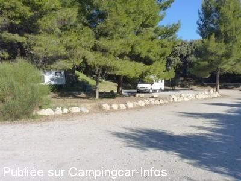

ASN = Aire de services avec stationnement nuit possible de :
VILLENEUVE
(N° 312)
Accès/adresse :
Chemin des Oliviers
04180 VILLENEUVE
04180 VILLENEUVE
Latitude : (Nord) 43.89608° Décimaux ou 43° 53′ 45′′
Longitude : (Est) 5.8615° Décimaux ou 5° 51′ 41′′
Tarif : Gratuit
Type de borne : Artisanale
Services :


Tous commerces
Autres informations :
Ouvert toute l'année
Pas de services en période de gel de novembre à mars
20 emplacements, en terre et graviers, éclairés, partiellement ombragés
Le 26/01/2011 par Xtian74

Le 26/01/2011 par Xtian74
Le 08/09/2008 par verdier
Le 28/05/2006 par ssrw38
de
Jean-Bernard Boschung (iron)
le 31/10/2015 :
Bonsoir,
Nous avons eu l'occasion de passer deux nuits sur cette aire.
Tranquillité, facilité d'accès (pas évident au premier abord) et très bonne pizzeria (40c, bouteille de vin offerte pour 3 pizzas).
Merci également à la commune pour cet endroit.
Juste une remarque, la capacité de l'aire de 20 véhicules (indiqué sur le panneau à l'entrée) et non 8 comme mentionné actuellement sur la fiche.
Salutations
Bonsoir,
Nous avons eu l'occasion de passer deux nuits sur cette aire.
Tranquillité, facilité d'accès (pas évident au premier abord) et très bonne pizzeria (40c, bouteille de vin offerte pour 3 pizzas).
Merci également à la commune pour cet endroit.
Juste une remarque, la capacité de l'aire de 20 véhicules (indiqué sur le panneau à l'entrée) et non 8 comme mentionné actuellement sur la fiche.
Salutations
de
maquet
le 06/10/2014 :
De passage dans le coin nous nous arrêtons toujours sur cette aire très calme, près du village, les services sont gratuits, et je vous signale le passage d'un vendeur de pizzas qui les livrent à votre c.c. elles sont extra (à partir du jeudi soir).
De passage dans le coin nous nous arrêtons toujours sur cette aire très calme, près du village, les services sont gratuits, et je vous signale le passage d'un vendeur de pizzas qui les livrent à votre c.c. elles sont extra (à partir du jeudi soir).
de
Ch et André 69
le 17/06/2014 :
Très bien,une aire simple,du calme,de l'ombre,prés du village et en plus gratuite.Parcours botanique en direction de la chapelle
Très bien,une aire simple,du calme,de l'ombre,prés du village et en plus gratuite.Parcours botanique en direction de la chapelle
de
Gilbert14
le 01/10/2013 :
Très calme la nuit, et village à proximité...
Très calme la nuit, et village à proximité...
de
lolita4845
le 14/07/2013 :
super aire ..calme et sympathique ..une bonne dizaine d'emplacements avec petits réverbères...eau et vidangages à dispo. gracieusement...
super aire ..calme et sympathique ..une bonne dizaine d'emplacements avec petits réverbères...eau et vidangages à dispo. gracieusement...
de
Michelene
le 13/05/2012 :
11 mai 2012. Aire simple, cadre très agréable, calme la nuit. Village sympa mais attention aux crottes de chien! Nous nous sommes régalés avec le pain et une fougasse de la boulangerie. Merci à la commune pour cette Aire de service gratuite.
11 mai 2012. Aire simple, cadre très agréable, calme la nuit. Village sympa mais attention aux crottes de chien! Nous nous sommes régalés avec le pain et une fougasse de la boulangerie. Merci à la commune pour cette Aire de service gratuite.
de
gerard
le 28/01/2011 :
si vous vous contentez de peu cette aire est trés agréable ce n'est pas a coté de la déchetterie ni de la station d'épuration mais derriere le cimetiere.
si vous vous contentez de peu cette aire est trés agréable ce n'est pas a coté de la déchetterie ni de la station d'épuration mais derriere le cimetiere.
de
Xtian74
le 25/01/2011 :
Passage le 25/01/2011. Une aire assez agréable, en balcon et au milieu de quelques arbres. 8 places oui, peut-être, mais à condition que les camping-caristes présents soient un peu disciplinés en parquant leurs engins.
3 CC présents et eau disponible bien que la température soit descendue bien en-dessous de 0°, donc la borne de services était utilisable !
Passage le 25/01/2011. Une aire assez agréable, en balcon et au milieu de quelques arbres. 8 places oui, peut-être, mais à condition que les camping-caristes présents soient un peu disciplinés en parquant leurs engins.
3 CC présents et eau disponible bien que la température soit descendue bien en-dessous de 0°, donc la borne de services était utilisable !
de
phil30240
le 13/11/2010 :
Aire effectivement très agréable, à côté du cimetière (voisinage calme...), entièrement gratuite ! Joli village avec petit marché le dimanche matin. Félicitations à l'Equipe municipale.
Aire effectivement très agréable, à côté du cimetière (voisinage calme...), entièrement gratuite ! Joli village avec petit marché le dimanche matin. Félicitations à l'Equipe municipale.
de
jeanic
le 17/09/2010 :
Nous avons été déçus : 12 CC pour 6 places donc espace réduit, village mort (aucune course possible, la boulangerie n'est ouverte que le matin). Nuit calme mais une seule suffit.
Nous avons été déçus : 12 CC pour 6 places donc espace réduit, village mort (aucune course possible, la boulangerie n'est ouverte que le matin). Nuit calme mais une seule suffit.
de
K. H. Huber
le 02/04/2010 :
Für Wohnmobile reservierter Platz. Nicht ganz eben, aber mit Keilen problemlos auszugleichen. Geschottert.
Ruhige Lage unterhalb des Friedhofes. Ver- und Entsorgung Marke Eigenbau. Bodenablauf für und Brauchwasser. Ausguß für Fäkaltank. Frischwasserhahn (auch im Winter offen). Schöner Stellplatz mit zweckmäßiger Ausstattung.
Für Wohnmobile reservierter Platz. Nicht ganz eben, aber mit Keilen problemlos auszugleichen. Geschottert.
Ruhige Lage unterhalb des Friedhofes. Ver- und Entsorgung Marke Eigenbau. Bodenablauf für und Brauchwasser. Ausguß für Fäkaltank. Frischwasserhahn (auch im Winter offen). Schöner Stellplatz mit zweckmäßiger Ausstattung.
de
ave68
le 11/04/2008 :
Nous avons découvert cette aire tout à fait par hasard en février dernier et nous avons été agréablement surpris! Tout y est pour faire une étape ravitaillement et vidange. Et de plus, elle est très reposante... Le village est accueillant. L'aire est parfaitement indiquée. Il suffit de se laisser guider par les panneaux jusqu'en haut du village et redescendre ensuite en dessous du cimetière.
Nous avons découvert cette aire tout à fait par hasard en février dernier et nous avons été agréablement surpris! Tout y est pour faire une étape ravitaillement et vidange. Et de plus, elle est très reposante... Le village est accueillant. L'aire est parfaitement indiquée. Il suffit de se laisser guider par les panneaux jusqu'en haut du village et redescendre ensuite en dessous du cimetière.
de
Linares
le 07/07/2007 :
Un grand bravo à la commune pour cette sympathique aire. Il faut y passer et faire travailler les petits commerces de ce charmand village pour montrer que le camping-cariste est un touriste généreux.
Un grand bravo à la commune pour cette sympathique aire. Il faut y passer et faire travailler les petits commerces de ce charmand village pour montrer que le camping-cariste est un touriste généreux.
de
patounet30
le 13/02/2007 :
Un magnifique petit village perché sur la colline et une aire CC tout autant magifique, dans les pins et très bien entretenue. Un bel effort pour un petit village et un beau cadeau pour nous, camping-caristes. A citer en exemple !
Un magnifique petit village perché sur la colline et une aire CC tout autant magifique, dans les pins et très bien entretenue. Un bel effort pour un petit village et un beau cadeau pour nous, camping-caristes. A citer en exemple !